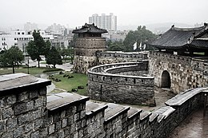

Historical Sites and Museums
South Korea has many beautiful historical sites and museums. This is a place where history was made and you can walk through temples and shrines in honor of their ancestors that fought for them. All of these historical sites have a story behind it and these places show you how the history of Korea came to be. And even though they remember the troubled times, it is honorable to them that all these people and ancestors gave their lives to give a better one. Even still today they are continuing to make history and providing a better life for the future generations. If you are a die hard historian then you are going to love visiting these places, from beautiful royal villas to memorial shrines, South Korea may be the place for you.

1.Hwaseong Fortress
The Hwaseong Fortress, or the Suwon Hwaseong, is a fortification that surrounds the center of Suwon, the capital of Gyeonggi-do, in South Korea. It was built from 1794 to 1796 by King Jeongji in honor of his father Prince Sado.